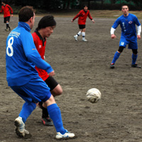
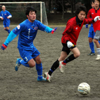

|
OiFuto 1, Sat 18th February. In a battle between two of the top sides in Division 2, second-placed Saitama Jets overcame third-placed Stoneds in a 5-4 thriller. Going into the game, these two sides were the highest-scorers in the division, so it would have been a brave man who predicted a low-scoring game. As it was, the Jets coasted into a 5-2 lead in the second half before falling asleep and conceding two in a hectic last few minutes.
Watching the Celts fluke their way past the Barbarians in the previous game meant that this was again a game the Jets had to win (just kidding, hooped fellas!)
They started well, with an early goal from Ryan Loren. Garner received the ball on the right, and launched a hopeful cross-shot towards the near post. The Stoneds keeper generously dropped it, and Loren was on hand to bundle it home from about a yard. The Jets continued to press for a second, with Gildart and Loren firing a couple of efforts wide, and Garner smacking a volley just over. Eite, Hembise and Bentz were marshaling the Jets defence comfortably, but the Stoneds looked dangerous on the break. They fought back and scored after one such fast break. They attacked quickly down the left, and the midfielder thumped a fine shot over Harada's head. The momentum then swung back to the Jets who struck again. Right-back Yasu Suyama bolted forwards, played a neat little one-two before squaring for Tomo Kobayashi to stroke a subtle shot past the Stoneds goalie. 2-1 at half-time and all to play for.
The second half started well for Stoneds, as they equalized with another well-taken shot. This was not turning out the way the Jets had planned it! The men from Saitama pulled themselves together and went ahead again after good work down the right from Matt Setterfield. His cross evaded the onrushing Kobayashi, and Sasaki popped up at the far post to drive home the third. Setters almost made it four just after, as he battled through a couple of challenges before poking a shot under the keeper, only to see it bounce off the post. A couple of inspired substitutions then worked in the Jets' favour. Garner, coming back into midfield, rode two challenges in the centre of the park, and his lob found Sasaki on the left. His low cross was turned in at the far post by Deryk Bliss, who had also just entered the game. A similar move from the right resulted in the Jets' fifth. Mark Eite's run was strong, his cross dangerous, and Fraser Gould (usually a keeper) was lurking at the back stick to slot home.
With just injury time left, and 5-2 up, the Jets turned on the auto-pilot. Their concentration may have been broken by a ranting old man, wandering on to the pitch and arguing with the ref, but that could be just a lame excuse. Anyway, weak defending let the Stoneds attackers waltz through the defence untouched for the Stoneds' third. Worse still, a long ball was watched by everyone from Saitama, and a Stoneds forward strolled through to head it over keeper Harada, who had come out to cover for his lax defence. It really was a day for comedy defending, but the Jets hung on for a 5-4 victory.
Report - Gary Garner.
|